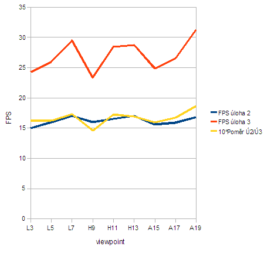

| Viewpoint | FPS s LOD |
|---|---|
| Labut-FPS #3 | 24,29 |
| Labut-FPS #5 | 25,95 |
| Labut-FPS #7 | 29,47 |
| Horska_draha-FPS #9 | 23,35 |
| Horska_draha-FPS #11 | 28,46 |
| Horska_draha-FPS #13 | 28,75 |
| Autodrom-FPS #15 | 24,86 |
| Autodrom-FPS #17 | 26,55 |
| Autodrom-FPS #19 | 31,28 |
Jelikož hardwarová konfigurace použitá pro testování úlohy è.2 nebyla dostupná, snažili jsme se najít jinou se srovnatelnými parametry. Nicménì, i relativnì malá zmìna ve výkonu grafické karty zpùsobila pomìrnì velké zmìny ve výsledcích.
Pøestože data jsou nasbírána na dvou rùzných systémech a jsou tak v absolutních èíslech tìžko porovnatelná, mùžeme alespoò zkoumat relativní zlepšení jednotlivých modelù vùèi sobì - pomìrem nového FPS vùèi starému.

Graf vygenerován pomocí spread-sheetu graf-fps.ods.